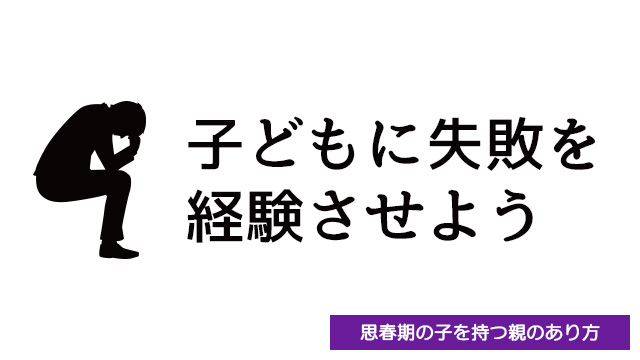

多くの親は、子どもにできるだけ失敗はさせたくないと考えています。
だから「失敗」の芽はなるべく早いうちに摘んでしまおうとします。
「そんなことじゃ○○できないよ」とか
「すぐに○○しなさい。さもないと△△になっちゃうでしょ」等々。
確かに明らかに生命に関わるような危険な行為や他者に迷惑をかけるような行動は注意しなくてはなりません。特に子どもが幼いときは、自他を傷つけたり明白な反社会的行動があればそれを抑止し、芽のうちに摘んでおくことは親の責務です。
しかし、このような危険行為を別とすれば思春期になった子どもが色々チャレンジしたりその結果挫折したり失敗する経験は、むしろ必要なことであって親が介入すべきものではないと思っています。
それどころか「失敗」や「挫折」こそが子どもの成長にとって糧となる。
そんなふうに親は達観して子どもを見守ることが大事です。
悩んでいる。イライラしている。勉強が手につかない。友達と遊んでばかりいる…。
人生経験を積んだ親や大人から見れば、このような子どもの姿は危ういものに見えますし実際危ういものです。
勉強に手を抜けば、やがて成績は下降するでしょうし入試にも失敗するかも知れません。
人間関係で悩んでいて解決策が見い出せないなら、孤立したり悲しみの中で傷つくかも知れません。友達と遊び呆けていれば、生活は乱れ色々と問題を起こすかもしれません。
つまりこのまま行けば「失敗」や「挫折」の可能性は高い。
親はそれが見えるので、何とかその失敗を回避しようと子どもに注意したり説教したりと干渉したくなるわけです。
しかし私に言わせればこれはダメです。子どものためになりません。
ではどうすればよいのか。失敗するに決まっている方向に我が子が進んでいるとき、親はどうしたらよいのか。
答えは簡単です。
失敗させればよいのです。
失敗をネガティブにとらえないこと
なぜでしょうか。
ここで少し考えていただきたいのですが、人生には何かを学ぶときにそれにふさわしい時期というのがあります。
たとえば1歳の子は「立つこと」「歩くこと」を学ぶ時期ですが、10歳の子は歩き方を学ぶ時期ではありません。その代りかけ算や基本的な漢字などを学んでいるでしょう。
こうしてレベルに応じて学びの段階（ステージ）は変わってきます。思春期は「こんなことを言ったら人は傷つく」など人間関係のやや高度な距離感を含め、幼児期とは比較にならないほど学びのカリキュラムも多岐に渡ります。
さてここで重要なことは子どもたちがそのカリキュラムを学ぶ（習得する）ためには「失敗」も含めて実際に体験すること。リアルな実体験からでしか学べないということです。
これを逆に言うと、子どもたちはリアルな実体験―成功も失敗もその両方―を求めているということです。
子どもたちが「失敗」を求めている。
この言葉の意味をもう一度かみしめてください。
私たち大人は人生経験があるが故に大切なことを忘れてしまいます。失敗をネガティブにとらえているのです。過去の記憶から「失敗」や「挫折」をつらいもの、イヤなもの、苦しいものと捉えできれば避けたい。もう経験したくないと考えています。
しかし子どもは違います。成功も失敗もそもそもどういうものか実感していない。
だからこそ体験したいのです。それがどういう味わいなのか知ってみたい。
親はだから失敗させればよいのです。
「勉強しないと成績が下がるかも知れない」
それは子どもも頭では分かっていますが、具体的にどんな困難が生じてくるか今イチ実感はない。困難がカタチとして現実に現れ自分自身がその困難に身を置いてはじめて「やっぱ勉強しないとヤバいっ！」と学びます。
子どもの頃の学びは、このように「頭で知る」のではなく身体で知る事で完了します。
そのことを子どもも本能的に分かっているので、失敗の経験さえどこかで強く望んでいるのです。
それなのに親や大人があらかじめ「失敗を回避」させようと画策するのは、例えて言うなら車の運転を覚えさせるのに「運転の仕方」を書いたマニュアルだけを渡すようなものです。かえって危険なことです。
もう一度言いますが、子どもの頃―特に思春期―は「失敗」が必要なのです。できるだけたくさんの失敗経験を積んだほうがよいのです。
というのも思春期や青年期というものは、その後の人生で直面するであろう様々な出来事に対応するための予行演習期間ともいえるからです。
そういう意味で、失敗の経験を多く積むことはそれだけ「引き出し」が増えることになり対応能力も高まります。要するに後の人生での「成功」率が高まる。
恐らく子どもたち自身もそのことを無意識に知っているのでしょう。
だから大人から見ると失敗するに決まっているような、しかし致命的にならない程度のミスや挫折を繰り返すのです。
大胆な言い方をすると、子どもたちの危うい行動は将来に備えて自らを鍛えようとする生命力の発露なのです。
時期が来れば赤ん坊はつかまり立ちを始め、自らの足で立とうとします。
どんなに転ぼうと痛い思いをしようと立ち上がることをやめません。
それは成長しようという強い意思と生命力の現われです。
それを見て危ないからと止める親がいるでしょうか。
思春期の子どもたちもこの時期特有の試行錯誤と失敗を経験して、それを糧に成長します。
この時期に「するべき失敗」というものがあり、それは個人の成長レベルによって違いはありますが少なくとも彼（彼女）には必要なものなのでしょう。
もしここで、この「失敗」を回避したらそれこそ後になって取り返しのつかない「破滅的失敗」となって跳ね返ってくる可能性が高い。
一定の時期に必要な体験（失敗）をしなかった者は後になって、大きなツケを払うことになる。
こう考えると思春期の失敗は、もはや失敗とは呼べません。
失敗とはネガティブなものではなく、その後の人生に不可欠なものである。
思春期の子を持つ親は、ぜひこのように大きな視野で我が子を見て欲しいと思います。
目先の損得や利害計算ではなく、子どもの人生全体を俯瞰する位置に立って見守ってください。
数々の失敗（と思われた経験）も、後で振り返ったとき「これらは自分の人生という作品に欠かせない大切な要素（パーツ）だった…」と子ども自身が思う日が来るかもしれません。
大丈夫です。子どもは親が思うよりずっと強いのです。
思春期の失敗をネガティブにとらえない。
どうかこのことを忘れないでいてください。